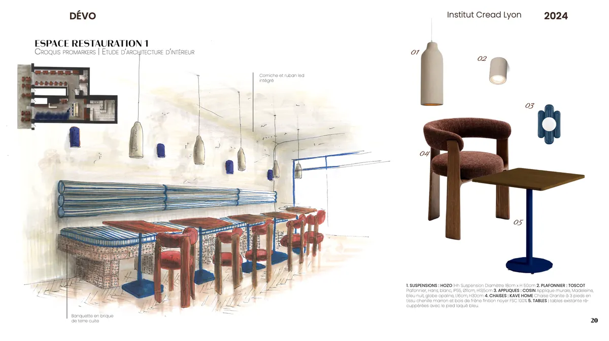
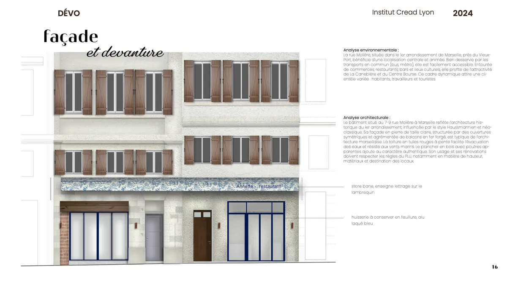
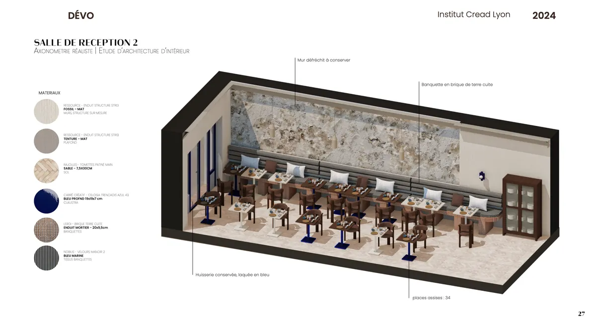
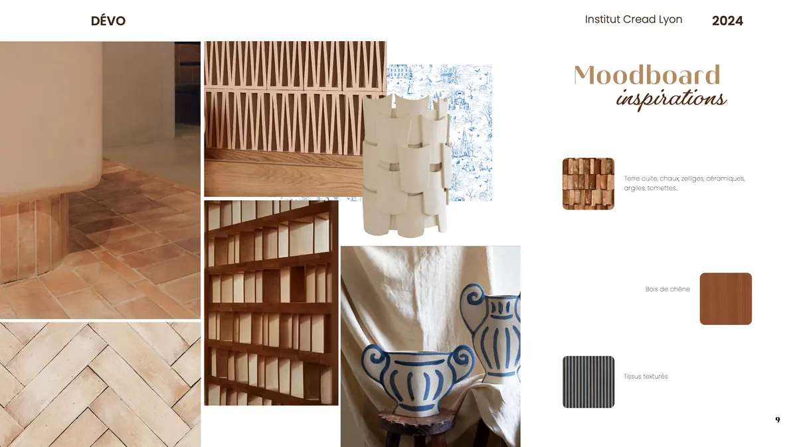
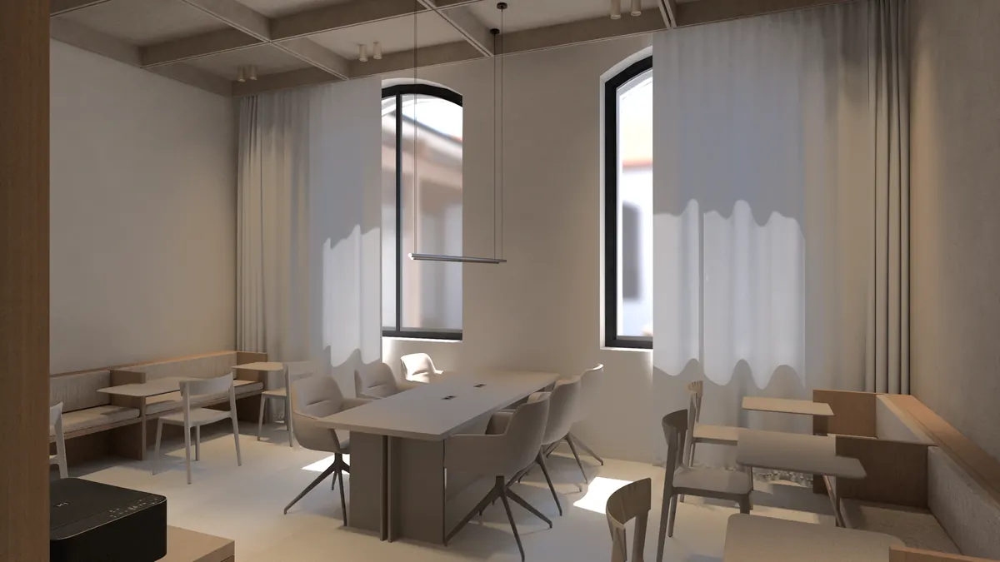

Restauration · Vieux-Port, Marseille
Restaurant Molière
Un restaurant méditerranéen où la terre cuite, la chaux et le chêne racontent le savoir-faire local.
Lieu
7-9 rue Molière, Marseille
Surface
140 m²
Dates
Sept. — nov. 2024
Type
Restaurant · projet de groupe
Logiciels
SketchUp · V-Ray · Photoshop
01 Concept
Matières nobles, usage juste.
Le projet allie matériaux nobles et fonctionnalité pour une ambiance chaleureuse et raffinée. Les banquettes sur mesure en terre cuite et le bar enduit à la chaux sont les deux pièces maîtresses.
Rue Molière, à deux pas du Vieux-Port : un carrefour touristique de la Méditerranée, où la demande pour une cuisine de qualité et inventive ne cesse de grandir.
Le bar enduit à la chaux et la salle
02 Matériaux
La Méditerranée en textures.
L'aménagement fluidifie les circulations tout en gardant un caractère méditerranéen authentique, en lien avec les traditions locales.
- Terre cuiteSols et revêtements, caractère brut
- ChauxEnduits mats et texturés
- ChêneStructures et mobilier
- Céramiques & tissusDétails subtils





Projet suivant
Marelle
Tiers-lieu étudiant · 4e année